最漫长的一条路~
识别文字连续阅读 · 原图附后
原始 PDF 不公开，本页展示捕获页面的截图。 识别文字按页序连续显示，全部原始截图附在文末，便于对照。文字由视觉转录整理，尚未经人工逐字核对，可能存在错字、漏字、漏行、顺序或断行错误。留言与作者回复仅限截图中可见的内容，不代表完整线上留言，也未据此推断留言总数。
OCR 识别提示（待核对）
- OCR/视觉转录文字，尚未逐字校对；可能错字、漏字、漏行，数字、姓名、表情、标点及断行也可能有误，请以截图为准。
- 这里只保留 PDF 已截到的正文、留言和作者回复；截图以外的留言不在此存档中。
- 未从截图推断留言总数或回复关系；手机界面文字也可能混入 OCR。
- 方括号中的表情说明是转录注释，原始表情请对照截图。
- 页面边界仅露出少量字形的重复行归到文字主体可见的相邻页；不推断缺失内容。
识别文字
文字按截图页序整理；页边重复行仅保留一次，原始 PDF 不公开。方括号中的表情说明为转录注释。
第 1 页对照原图
纳指上涨1%，标普微涨。
持仓的科技股有所反弹，消费龙头股普遍下跌，医药保健龙头股涨跌不一。
市场是否就此反转，由跌转涨，仍有待观察。
这次下跌，我捡了自己喜欢的筹码，然后继续耐心等机会，上涨和下跌，各有各的机会。
目前现金储备约25%，看有没有机会继续下跌，打到只剩15%，后续随着上涨到来，高位适量减仓，再修复30%左右的现金储备。
老美10月的非农数据远超市场预期，数据公布后，12
第 2 页对照原图
月加息的概率增大至80%，明年1月加息预期概率也升至82%左右。
后续，我会重点观察Anthropic的IPO，一看它是否受投资者认可，二看高估值能否在二级市场经受考验。这对科技股下一阶段的走势影响较大。
大模型目前的商业模式和生态，还是比较单一，我会更看重它生态的演变是否能构筑独特的护城河。
投资很无聊，每年能操作的机会和窗口期都很少，今年算多的了，正常一年能有1-2次就非常好了，2年1次的也是常态。
更多的时间是在等待，机会来了再动手干活，平时该干嘛干嘛，给自己找点事做，给生活寻些点缀。
投资方面的大师很多，价值投资者绕不开本杰明·格雷厄姆、大卫·多德、菲利普·费雪、约翰·伯尔·威廉姆斯、巴菲特、查理曼·芒格；量化交易绕不开詹姆斯·西蒙斯、爱德华·索普；趋势交易绕不开杰西·利弗莫尔、理查德·丹尼斯。
价值投资的书籍也多，《聪明的投资者》、《证券分
第 3 页对照原图
析》、《怎么选择成长股》、《投资最重要的事》、《穷查理宝典》、《巴菲特致股东的信》...
投资界群星璀璨，没有哪个派系能一统江湖，各有各的优点。
就我个人经历和体验来说，喜欢价值投资+趋势的结合。价值投资如黑夜中的皓月当空，让我们这些在路上行走的普通人也不迷茫，不害怕。
这世上，最漫长的路，是从知道到做到，做到和做好，又是另一条路，知易行难。知道是一码事，做到又是另一码事。
投资，就是在不断实践，结合自身的情况，从理论到实践再结合理论，不断出新知。
投资的经典言论和书籍，我们看过很多，知道的人也很多，可以说是广为流传，人尽皆知。
但能把它实践到位的，是少数，连投资大师们自己也在不断实践的路途中。
不过，这实践，恰恰是最迷人的。我想，这也是为什么会有这么多读者聚在这里的原因，有了同频一起前行的
第 4 页对照原图
群体。
我们在不断犯错中不断纠正、纠偏，有踩坑的懊恼，有成长的欣喜，也有收获成果的快乐。
开始屏蔽大环境和身边偶尔出现的杂音，越来越注重自身的成长和陪伴家人的日常生活点滴。向内求、向前看、往前走，挺好。
另外，要果断远离低层次群体。说过很多次，这里的低层次是指不愿意学习，不愿意成长，坐井观天的人，不是指收入/经济方面。典型特征是爱抬杠、自以为是、见识短浅，还总觉得人家不待见他是有问题，属于太把自己当回事，没搞懂自己的定位。
经济越落后的地区，这类群体越多。一二线城市和其他地区是完全不同的两个世界，无论是物质层面，还是人的认知层面。
我写公众号七年多，说话做事的风格比较率性，是什么就说什么，没少得罪人。但那又怎么样呢？不舒服自己取关了就是。
不介入他人因果，尊重他人命运。这样在面对生态的多
第 5 页对照原图
样性时，能少很多内耗。
无论是投资，还是处事，能找到适合自己、让自己舒适的方式方法，都是幸福的。
... ...
两个小奶娃现在每天都需要花大量的时间作陪，相比一年前的每天更新，现在的更新减少了60%；
以后大概率会更少，一是时间问题，二是有些话慢慢就不想说了，可能是环境问题，也可能是自身年龄上来后，表达欲确实消退了。
和三个大的孩子相处起来，也各有各的不同。
老三即将9周岁，好奇心强，规则感也在建立，自控力还在发展；会开始在意同伴怎么怎么样，同伴的影响在上升。
性启蒙方面，早期主要是跟他说男女有别，4-5岁开始自己洗澡，妈妈和姐姐不看，身体隐私，不能随便给别人看，更不能摸，但哪里觉得不舒服，或者被谁触碰不舒服了，要告诉爸妈，就这类最基础的；
第 6 页对照原图
到5-6岁，就是用科学名称讲身体部位、功能和作用，以及容易出现的问题。现在快9周岁，我开始给他讲青春期身体大致会出现的变化，以及怎么正确面对。
老三现在作息、作业、家务、屏幕时间、出门报备这些，我们都是给具体的规则和清晰结果，很少讲大道理。
多给他安排运动和动手任务，也让他自己出门找同伴玩，有地方消耗精力。
允许他有情绪，不压制，可以表达出他生气、委屈、害怕，不批评，更多是引导他怎么面对情绪。
老二的性启蒙，这些年主要是我媳妇在做，我比较少介入。
不过，我媳妇除了讲生理的变化和生理期的应对、用品使用外，还涉及到了恋爱和网络风险。
任何亲密接触都需要双方自愿，不混淆喜欢、好感、爱这些感情层次的区别，拒绝别人是基本权利，被拒绝也要尊重他人意愿。
第 7 页对照原图
因为老二十三岁这个年龄，开始很难避免会涉及到手机和网络。
我们家里给孩子的手机，仅限在家里使用，大模型和app大多是青少年模式。
但考虑到学校或家庭之外，孩子可能会接触到一些不良的内容，我们还是提前打了预防针:让他们有看到不良的内容和东西，不要自责，可以来找我们。
不拍也不传隐私照，遇到索要这些的可以告诉我们，会教她应对，不单独去见不了解的人。
老二和老三，现在我们进他们的房间，都会提前敲门，尊重他们的隐私，尊重他们的审美，但会给他们定边界，比如在审美上的花费、安全和场合。
老大的性启蒙，我会明确跟他说性冲动正常，但切记不能把冲动变成对他人的冒犯。主要跟他讲同意、尊重、避孕、性病、法律责任和关系责任这些，还有正常的性特征和变化。
孩子们从小到大，逐步体验过被当小大人的感觉，所以现在培育和相处起来，都比较轻松些。
第 8 页对照原图
目前跟三个孩子聊的、做的，还是有点区别的，老三重点教的身体界限和具体规则，老二重点给隐私尊重和青春期准备，老大重点谈同意/责任和协商式信任。
整体来说，身体是自己的，尊重是相互的，遇到麻烦可以找我们。
青春期的孩子，不耐烦不是脾气差，是大脑在探索重组他和世间万物的关系；讨厌被管太多，是因为他在成长，在练习离开我们；逞强，更多是怕我们失望。
青春，是一场需要被理解的成长分娩，他们终将会长大，踏上属于自己的路，悄然前行。
时间很快，一转眼，他们都长大了，看看两个小奶娃，再看看老大，这种时光飞逝的感觉更明显。
就这样吧。
第 9 页对照原图
[留言 1]
金渐成（作者）｜11分钟前｜赞12｜置顶
这是助农项目的详细介绍: 天叙丨转眼五周年了~ 目前95折活动最后几天。有兴趣的读者可以看看，没兴趣的自行略过。
[留言 2]
Kian｜浙江｜11分钟前｜赞8
美股这走势，给人一种：哇靠，这么快就反转了？？？
[作者回复留言 2]
金渐成（作者）｜9分钟前｜赞38
美股经常走“V”型，偶尔走“U”型。遇上前者是常态，遇上后者是运气，就看每个人自己要怎么去应对了。
[留言 3]
Olivier [中文昵称首字不清]谢帆｜广东｜11分钟前｜赞7
可惜了，昨晚以为会再来一波。但是感觉七巨头也没有大涨，耐心等吧
第 10 页对照原图
[续上页：作者回复留言 3]
金渐成（作者）｜8分钟前｜赞36
再观察一阵，看看到底会不会继续跌，还是反转上涨，目前还没有明显的迹象。
[留言 4]
二凸｜浙江｜9分钟前｜赞10
玑哥的教育理念真的太先进了，我也算看着这几个孩子长的，玑哥用自己的肩膀把孩子托举到了普通人望而不可及的高度，太牛了
[作者回复留言 4]
金渐成（作者）｜7分钟前｜赞18
也都是不断摸索中一路前行的，不一定对，但很适合我家孩子们。时间好快，几年前咱们第一次碰面时，我家老三还是个小不点…
[留言 5]
SZ｜广东｜7分钟前｜赞7
人对认知以外的事情都是视而不见的，这一点读《平面国》的时候感受特别明显，这本100多年前的书读起来毫无年代感。我们都是不同程度的睁眼瞎，区别在于很多人觉得只要识字就不是睁眼瞎了。
[作者回复留言 5]
金渐成（作者）｜4分钟前｜赞17
嗯，每个人的认知不同，应对方式自然也不同，都有自身的局限性，没法超脱于时代和自身经历。不过，有些人性的东西，要特别注意，远离那些激发你自身劣根性的东西，比如爱抬杠、爱贬低、爱面子；多亲近那些激发自身善和成长性的东西和群体。这样对自身有好处。
[留言 6；正文接下页]
热寂｜美国｜5分钟前｜赞5
第 11 页对照原图
[续上页：留言 6]
耐心等待，同时专心工作攒子弹😂
[作者回复留言 6]
金渐成（作者）｜1分钟前｜赞9
这是对的，把投资当副业就行，专注主业，做大做强现金流。之前写过几次。
[留言 7]
刘扬｜广东｜5分钟前
就我个人经历和体验来说，喜欢价值投资+趋势的结合。价值投资如黑夜中的皓月当空，让我们这些在路上行走的普通人也不迷茫，不害怕。
玑哥说的太对了，看玑哥公众号几年，已经相信价值投资这条路，慢慢在实践中，希望以后能做好。
[作者回复留言 7]
金渐成（作者）｜刚刚｜赞1
先做到，再做好，先完成，再完美。都在不断实践中成长，去经历，去感受，我个人很喜欢这种感觉。
原始图片 · 11 页
第 1 页 · 原始截图

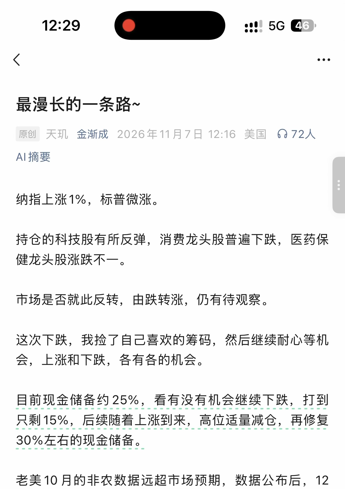
第 2 页 · 原始截图

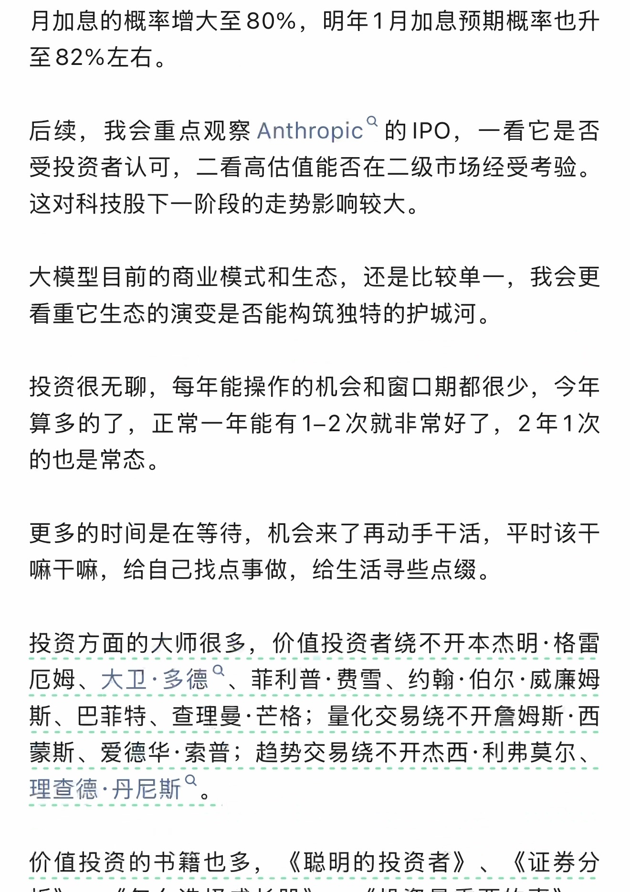
第 3 页 · 原始截图

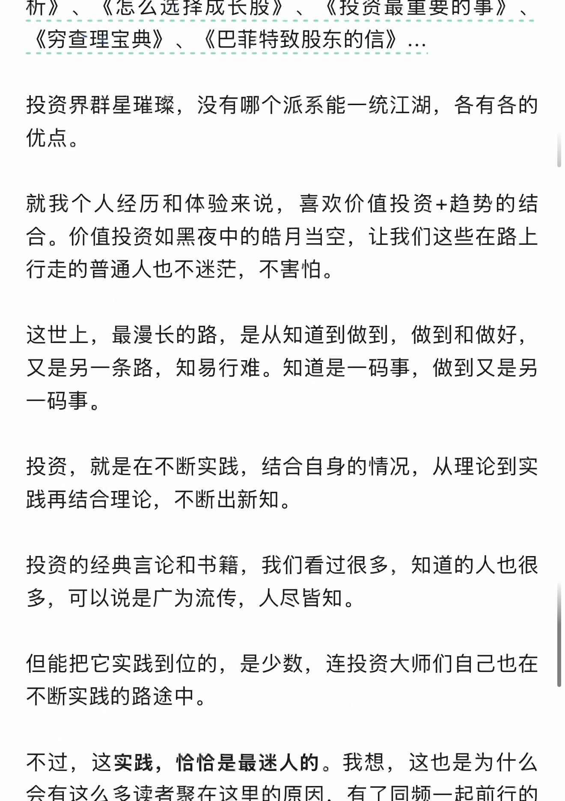
第 4 页 · 原始截图

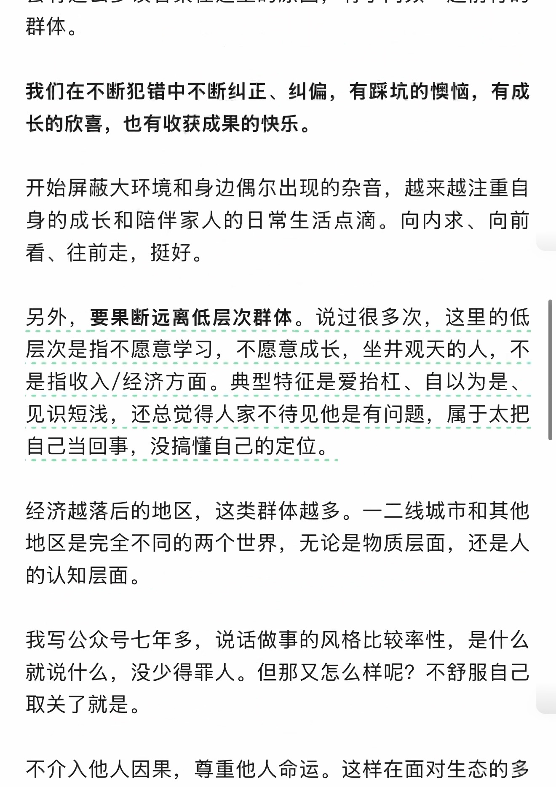
第 5 页 · 原始截图

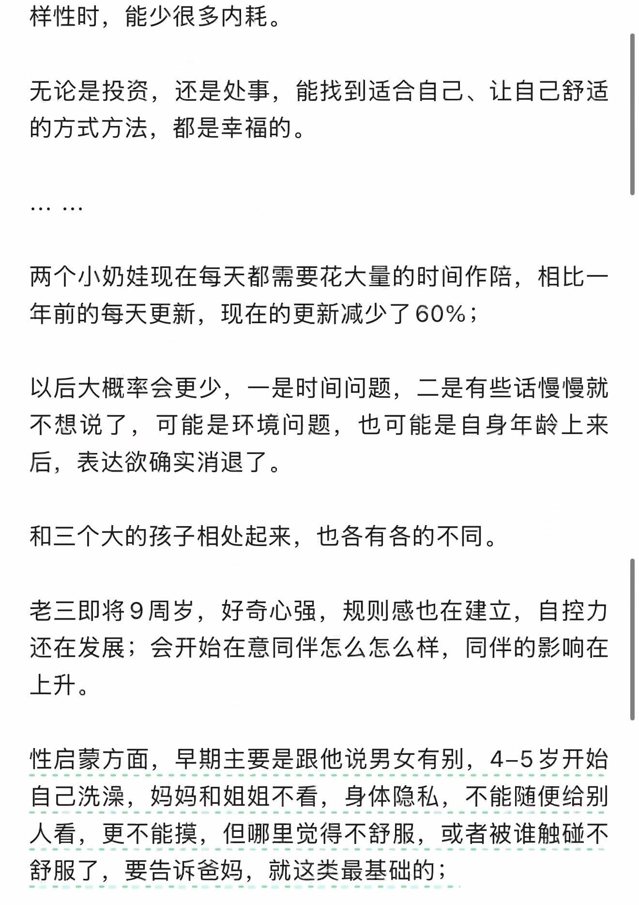
第 6 页 · 原始截图

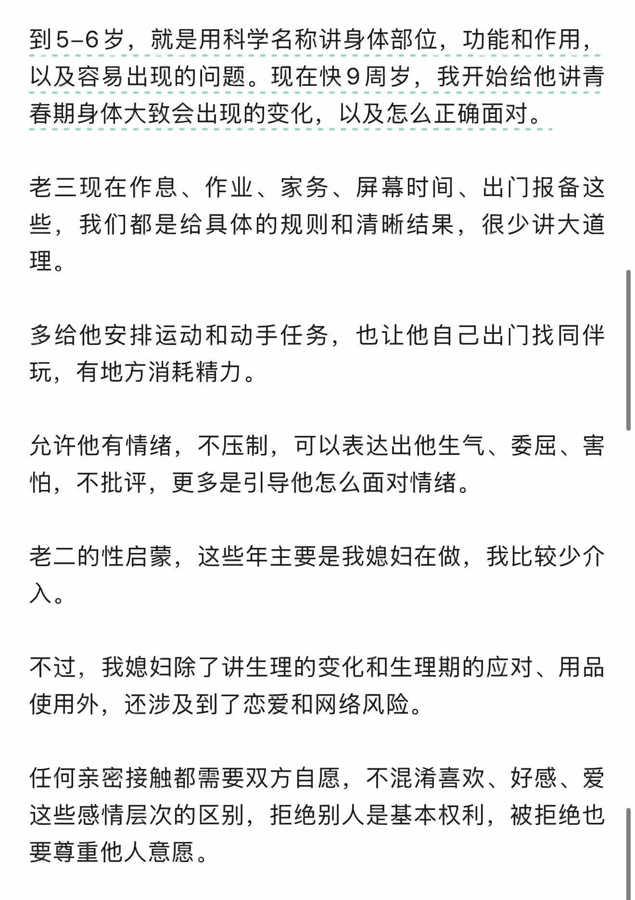
第 7 页 · 原始截图

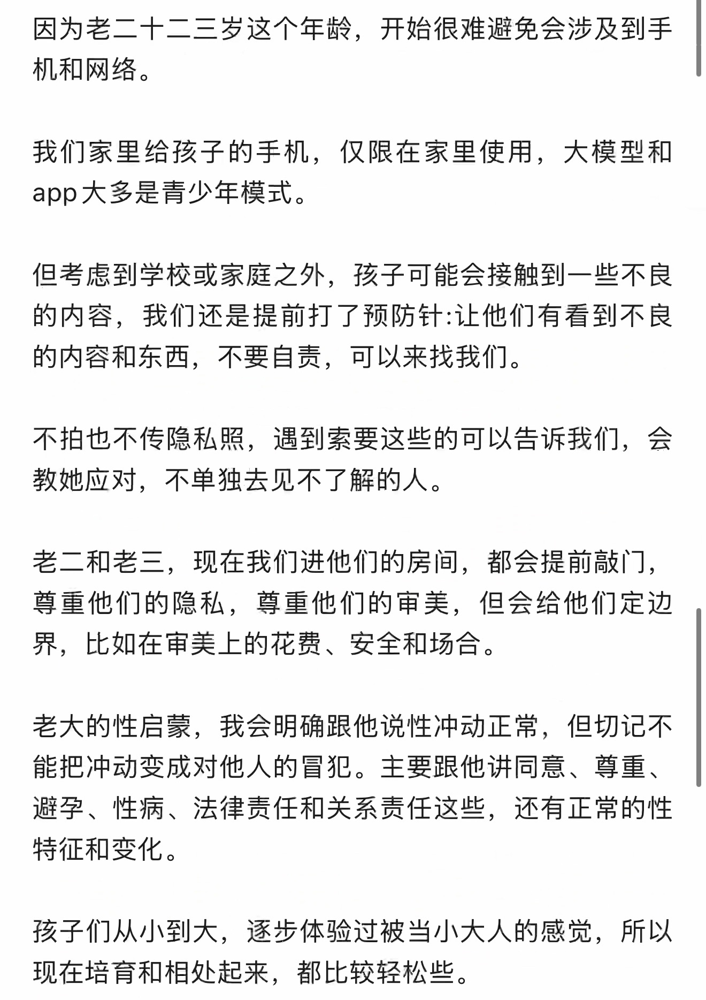
第 8 页 · 原始截图

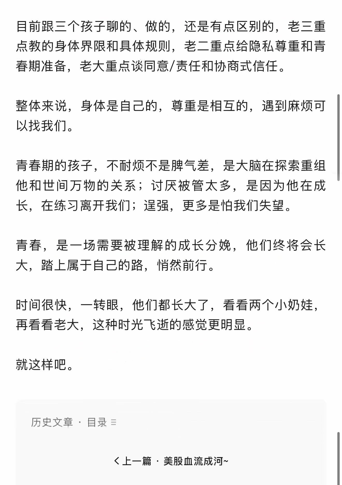
第 9 页 · 原始截图

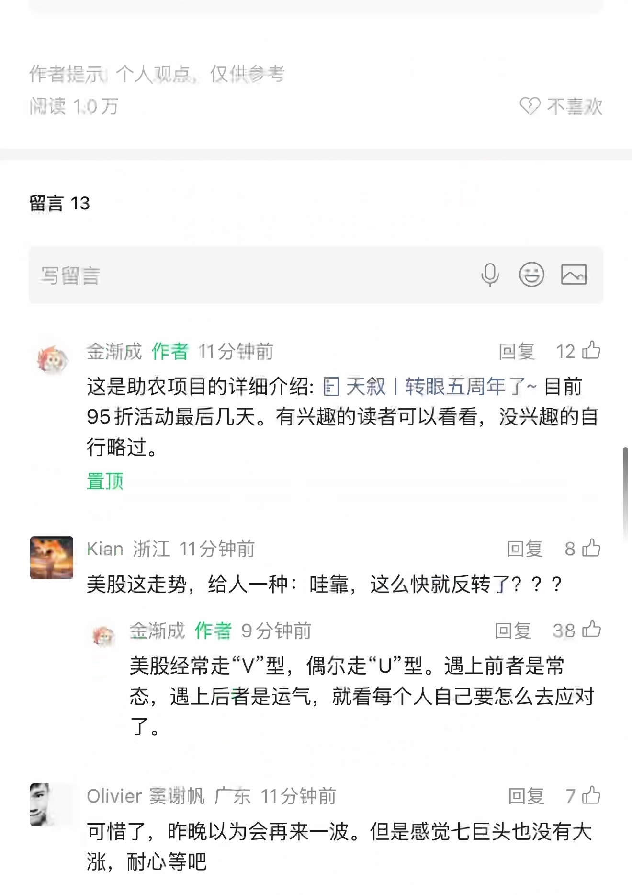
第 10 页 · 原始截图

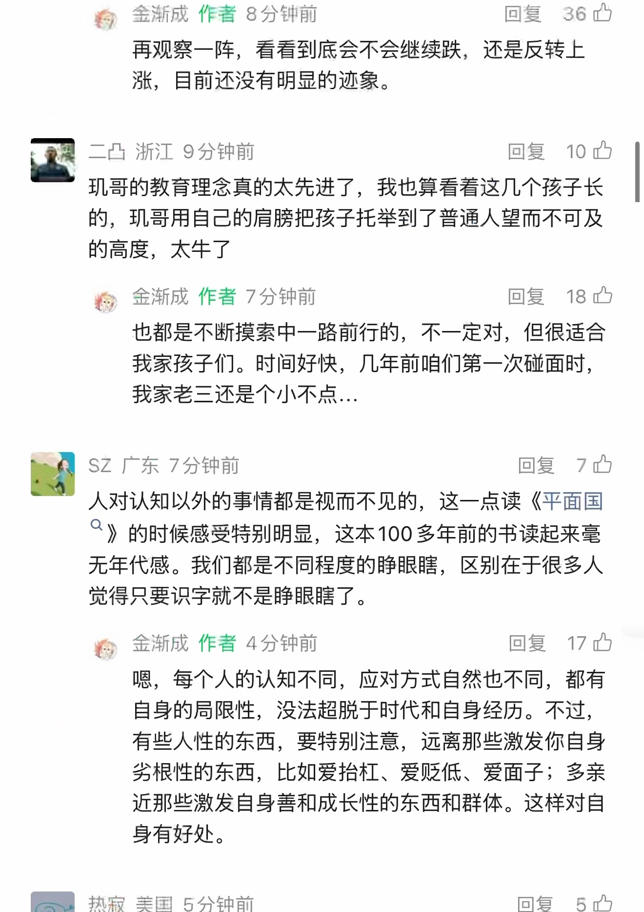
第 11 页 · 原始截图

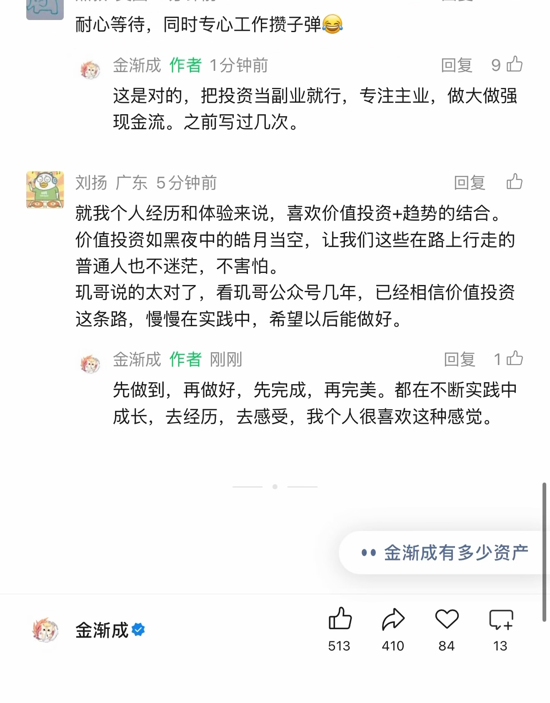
按日期浏览全部来源（同日按条目标识排序）
回到页首